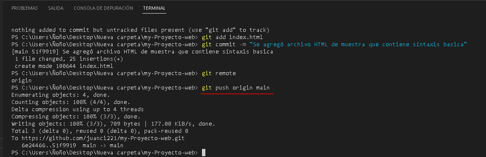
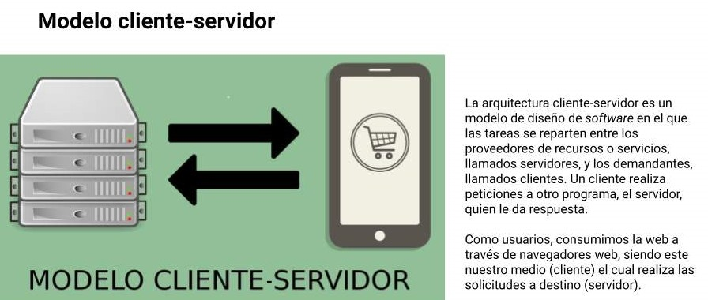

GIT y GitHub
Git y GitHub son dos entidades diferentes que te ayudan a administrar y alojar archivos. Git es un software de control de versiones gratis y de código abierto, un software que permite registrar el historial de cambios de un proyecto. Mientras que GitHub es una plataforma para alojar tus repositorios Git.
Git
El control de versiones se refiere al proceso de guardar diferentes archivos o «versiones» a lo largo de las diferentes etapas de un proyecto. Esto permite a los desarrolladores hacer un seguimiento de lo que se ha hecho y volver a una fase anterior si deciden que quieren revertir algunos de los cambios que han hecho.
Esto es útil por varias razones. Por ejemplo, facilita la resolución de errores y la corrección de otros errores que puedan ocurrir durante el desarrollo. También puede anotar los cambios en cada versión, para ayudar a cualquier miembro del equipo a mantenerse al día sobre lo que se ha completado y lo que aún queda por hacer.
A diferencia de la mayoría de los otros sistemas de control de versiones (VCS), git almacena cada versión guardada como una ‘instantánea’ en lugar de una lista de los cambios realizados en cada archivo. Puede hacer referencia a antiguas instantáneas siempre que lo necesite y las nuevas instantáneas se crean cuando se modifica el proyecto.
Los Tres Estados
Ahora presta atención. Esto es lo más importante que debes recordar acerca de Git si quieres que el resto de tu proceso de aprendizaje prosiga sin problemas. Git tiene tres estados principales en los que se pueden encontrar tus archivos: confirmado (committed), modificado (modified), y preparado (staged).
Confirmado: significa que los datos están almacenados de manera segura en tu base de datos local.
Modificado: significa que has modificado el archivo pero todavía no lo has confirmado a tu base de datos.
Preparado: significa que has marcado un archivo modificado en su versión actual para que vaya en tu próxima confirmación
El directorio de trabajo es una copia de una versión del proyecto. Estos archivos se sacan de la base de datos comprimida en el directorio de Git, y se colocan en disco para que los puedas usar o modificar.
El área de preparación es un archivo, generalmente contenido en tu directorio de Git, que almacena información acerca de lo que va a ir en tu próxima confirmación. A veces se le denomina índice (“index”), pero se está convirtiendo en estándar el referirse a ella como el área de preparación.
El directorio de Git es donde se almacenan los metadatos y la base de datos de objetos para tu proyecto. Es la parte más importante de Git, y es lo que se copia cuando clonas un repositorio desde otra computadora.
El flujo de trabajo básico en Git es algo así:
- Modificas una serie de archivos en tu directorio de trabajo.
- Preparas los archivos, añadiéndolos a tu área de preparación.
- Confirmas los cambios, lo que toma los archivos tal y como están en el área de preparación y almacena esa copia instantánea de manera permanente en tu directorio de Git.
Si una versión concreta de un archivo está en el directorio de Git, se considera confirmada (committed). Si ha sufrido cambios desde que se obtuvo del repositorio, pero ha sido añadida al área de preparación, está preparada (staged). Y si ha sufrido cambios desde que se obtuvo del repositorio, pero no se ha preparado, está modificada (modified).
Instalación GIT
Ahora necesitamos instalar las herramientas de Git en nuestra computadora. Primero, descargue el software git para su Sistema Operativo (OS): Lo puede descargar de la página oficial Git.
Entonces tendrá que ejecutar el instalador. Este proceso variará dependiendo del sistema operativo que esté utilizando. Entonces puedes configurar git usando su interfaz de línea de comandos.
Configurando GIT
Comando git --version
Si obtienes una versión Git como respuesta, ya estás listo.
Comando git init
Repositorio: Si queremos empezar a usar Git, necesitamos saber dónde alojar nuestros repositorios. Un repositorio es un proyecto que contiene múltiples archivos. En nuestro caso un repositorio contendrá archivos basados en código. Hay dos maneras en que puedes alojar tus repositorios. Uno es en línea (en la nube) y la segunda es fuera de línea (auto-instalado en tu servidor).
Una vez que verificamos que ya está instalo GIT en nuestro servidor, podemos inicializar un repositorio con git init crea un repositorio de git vacío, por defecto lo que hace esto es crear un directorio llamado .git
El directorio .git lo encontramos en nuestra carpeta local
Comando git config --global
Como último paso para terminar de configurar GIT vamos a ejecutar los siguientes comandos con tu información para establecer un nombre de usuario y un correo electrónico predeterminados para cuando vayas a salvar tu trabajo.
git config --global user.name "juan"
git config --global user.email "juan@mail.com"
Hemos terminado de configurar Git, para empezar a trabajar y ver su potencial, ahora veremos algunos comandos básicos.
Comando git status
El comando git status muestra el estado del directorio de trabajo y del área del entorno de ensayo. Permite ver los cambios que se han preparado, los que no y los archivos en los que Git no va a realizar el seguimiento. El resultado del estado no muestra ninguna información relativa al historial del proyecto.
Comando git add .
El comando git add añade un cambio del directorio de trabajo en el entorno de ensayo. De este modo, indica a Git que quieres incluir actualizaciones en un archivo concreto en la próxima confirmación.
Si volvemos a escribir el comando git status el estado de los archivos cambio ahora están de color verde, y nos dice cambios a ser confirmado, con esto estamos en el index de git y estamos a punto de hacer una escritura en el repositorio local
Comando git commit -m
Commit: Es cada uno de los cambios registrados en el historial de GIT. Cada uno de los desarrolladores manda los commits de los cambios que ha hecho. No es automático, cada desarrollador tiene que decir qué hizo y por qué. Cuando se llama a git commit , es necesario incluir un mensaje. El mensaje debe ser una breve descripción de los cambios a los que se les está realizando commit. El mensaje debe estar al final del comando y debe estar envuelto entre comilla " "
Comando git log
Si volvemos a escribir el comando git status, nos va dar el mensaje. Estas en la rama master, nada para hacer commit, árbol de trabajo limpio, esto quiere decir que ya tenemos nuestra primer escritura en el repositorio local, lo podemos validar con el comando git log
De manera predeterminada, el comando git log enumera los commits generados en orden cronológico inverso: la suma de comprobación SHA-1, el autor (nombre y dirección de correo electrónico) y la fecha de cada commit. Además, se muestra un comentario individual que sirve a todos los usuarios como indicador para poder buscar rápidamente las versiones.
Ejemplo del potencial o valor que tiene GIT
Vamos hacer una modificación al archivo index.html, la guardamos y ejecutamos git status
Comando git diff index.html
Git se ha ideado para posibilitar la ramificación y el etiquetado como procesos de primera importancia (a diferencia de SVN) y las operaciones que afectan a las ramas y las etiquetas (como la fusión o la reversión) también se almacenan en el historial de cambios. No todos los sistemas de control de versiones ofrecen este nivel de seguimiento.
Si tu meta es convertirte en un desarrollador o, te interesa el desarrollo web y Mobile. Es importante que aprendan de GIT, en la página oficial de git vamos a encontrar los comando que se usan y podemos ponerlo en práctica.
GitHub
Github es un portal creado para alojar el código de las aplicaciones de cualquier desarrollador, y que fue comprada por Microsoft en junio del 2018. La plataforma está creada para que los desarrolladores suban el código de sus aplicaciones y herramientas, y que como usuario no sólo puedas descargarte la aplicación, sino también entrar a su perfil para leer sobre ella o colaborar con su desarrollo. Como su nombre indica, la web utiliza el sistema de control de versiones Git
Ahora aprenderemos cómo usar GitHub
Creación de cuenta de GitHub
Para crear tu cuenta, necesitas ir al sitio web de GitHub y llenar la forma de registro.
Trabajando con GitHub
Explicare dos maneras de trabajar con GitHub
(La Primera) Recomendada, Crear el repositorio, clonarlo en tu PC y trabajar en él.
(La segunda) Trabajar en tu proyecto localmente (Git) y después crear el repositorio en GitHub y enviarlo a remote.
Primer forma de trabajo con GitHub
- Creación de un repositorio totalmente nuevo en GitHub.
- Clonarlo en nuestra computadora.
- Trabajar en nuestro proyecto y enviarlo de regreso.
Una vez que ya nos registramos GitHub, vamos a crear un nuevo repositorio haciendo clic en el botón de "Nuevo repositorio" en la página web de GitHub.
Elije un nombre para tu primer repositorio, agrega una pequeña descripción, marca la opción "Inicializar este repositorio con un README", y haz clic en el botón "Crear Repositorio".
Bien hecho! Tu primer repositorio de GitHub fue creado.
Ya creado el repositorio en Github, ahora vamos a obtener una copia del repositorio en tu computadora. Para hacer eso, necesitas "clonar" el repositorio en tu computadora.
Clonar un repositorio: significa que estás tomando un repositorio que está en el servidor y lo estás clonando a tu computadora, es lo mismo que descargarlo. En la página del repositorio, necesitas obtener la dirección "https".
Una vez que obtenemos la dirección del repositorio, necesitas utilizar la terminal GIT. Usa el siguiente comando en tu terminal. Cuando estés listo puedes ingresar esto:
Comando git clone
Si verificamos en nuestro servidor, vamos a ver nuestro proyecto de GitHub clonado.
Ahora, tu repositorio está en tu computadora. Necesitas moverte en él, con el siguiente comando.
Comando cd (nombre del repositorio) en este caso sería my-Proyecto-web
Como puedes ver en la imagen de arriba, el nombre de mi repositorio es "my-Proyecto-web" y este comando me hizo ir al directorio específico.
Ahora, en ese folder podemos crear archivos, trabajar en ellos y guardarlos localmente. Para guardarlos en un lugar remoto, como GitHub tenemos que hacer un proceso llamado "commit".
En tu caso puedes crear un archivo index.html dentro de la carpeta clonada, o todo lo que va a tener tu proyecto, pero siempre adentro de la carpeta clonada.
En la terminal, estás en el directorio de tu repositorio. Hay 4 pasos en un commit: 'status', 'add', 'commit' y 'push'. Todos los siguientes pasos deben ejecutarse dentro de tu proyecto. Repasemos uno por uno.
Comando git status
La primer cosa que necesitas hacer es revisar los archivos que has modificado. Para hacer esto, puedes escribir el siguiente comando para hacer aparecer una lista de cambios.
Con la ayuda de la lista de cambios, puedes agregar todos los archivos que quieras cargar con el siguiente comando.
Comando git add (nombre de archivo) (nombre de archivo) (.....)
En este caso, agregaremos un archivo HTML simple, index.html
Una vez, que hemos agregado los archivos de nuestra elección ejecutamos el comando commit, necesitamos escribir un mensaje para explicar lo que hemos hecho. Este mensaje puede ser útil, después si queremos revisar el historial de cambios. Aquí hay un ejemplo de lo que podemos poner en este caso.
Comando git commit -m "Se agregó archivo HTML de muestra que contiene sintaxis básica"
Ya creado el commit, vamos a empujar nuestro archivo al repositorio GitHub con el siguiente comando.
Comando git push
Vamos a empujar nuestro trabajo en GitHub. Para hacer eso, necesitamos 'enviar' nuestros archivos a Remote. Remote es una instancia duplicada de nuestro repositorio que vive en algún otro lugar en un servidor remoto. Para hacer esto, debemos saber el nombre del Remote (En general, Remote es nombrado origen). Para encontrar ese nombre, escribe el siguiente comando.
Comando git remote
Como puedes ver en la imagen, dice que el nombre de nuestro remote es origin. Ahora podemos 'enviar' de manera segura nuestro trabajo con el siguiente comando.
Comando git push origin main
Si vamos a nuestro repositorio en la página web de GitHub, podemos ver el archivo index.html que hemos enviado a remote, GitHub
Segunda forma de trabajo con GitHub
- Trabajar en tu proyecto localmente.
- Crear el repositorio en GitHub.
- Enviarlo a remote.
El tipo 2 permite hacer un nuevo repositorio de un folder existente en nuestra computadora y enviarlo a GitHub. En muchos casos es posible que ya hayas creado algo en tu computadora y repentinamente quieras convertirlo en un repositorio en GitHub.
De manera predeterminada, cualquier directorio en nuestra computadora no es un repositorio Git, pero lo podemos convertir en un repositorio Git ejecutando el siguiente comando en la terminal.
Comando git init
Después de convertir nuestro directorio en un repositorio Git, la primera cosa que necesitamos hacer es revisar los archivos que tenemos utilizando el siguiente comando.
Comando git status
Así que hay un archivos en ese directorio que necesitamos "agregar" a nuestro Repo.
NOTA: Para "agregar" todos los archivos en nuestro repositorio podemos usar el siguiente comando. (git add .).
Comando git add index.html
Después de que el área de preparación (el proceso de Add) está completo, podemos revisar si nuestros archivos fueron agregados satisfactoriamente o no ejecutando git status
Después tenemos que hacer "commit" con una descripción.
Si mi repositorio inició en GitHub y lo descargo a mi computadora, un remote ya estará unido a él (Tipo 1). Pero si estoy iniciando mi repositorio en mi computadora, no tiene un remote asociado con él, así que necesito agregarlo (Tipo 2).
Así que para agregar ese remote, primero tenemos que ir a GitHub. Crear un nuevo repositorio y nombrarlo como queramos almacenarlo en GitHub. Después hacer clic en el botón "Crear repositorio".
NOTA: En el tipo 2, por favor no inicialices el repositorio con un archivo README cuando crees un nuevo repositorio en la página web de GitHub.
Después de hacer clic en el botón "Crear repositorio" encontrarás la siguiente imagen como una página web.
Después de completar estos pasos uno por uno, si vas GitHub puedes encontrar tu repositorio con los archivos!
Muchas gracias a todos por leer. Expliqué lo básico de Git y GitHub. Te animo fuertemente a leer más artículos relacionados a Git y GitHub. Espero que este artículo te haya ayudado. Gracias. ¡Feliz Programación!
¿Qué es un servidor?
Es un aparato informático que almacena, distribuye y suministra información. Los servidores funcionan basándose en el modelo “cliente-servidor”. El cliente puede ser tanto un ordenador como una aplicación que requiere información del servidor para funcionar. Por tanto, un servidor ofrecerá la información demandada por el cliente siempre y cuando el cliente esté autorizado.
Cliente y servidor
La expresión cliente servidor se utiliza en el ámbito de la informática. En dicho contexto, se llama cliente al dispositivo que requiere ciertos servicios a un servidor. La idea de servidor, por su parte, alude al equipo que brinda servicios a las computadoras (ordenadores) que se hallan conectadas con él mediante una red.
El concepto de cliente servidor, o cliente-servidor, refiere por lo tanto a un modelo de comunicación que vincula a varios dispositivos informáticos a través de una red. El cliente, en este marco, realiza peticiones de servicios al servidor, que se encarga de satisfacer dichos requerimientos.
Con esta arquitectura, las tareas se distribuyen entre los servidores (que proveen los servicios) y los clientes (que demandan dichos servicios). Dicho de otro modo: el cliente le pide un recurso al servidor, que brinda una respuesta.
¿Qué es un hosting y cómo funciona?
Un hosting es un servicio online que hace que se pueda acceder a tu sitio web en Internet. Cuando obtienes un hosting, básicamente alquilas un espacio en un servidor que almacena todos los archivos y datos de tu sitio web para que funcione correctamente.
Los proveedores de hosting web proporcionan la tecnología y los recursos necesarios para que tu sitio web funcione de forma eficaz y segura. Éstos se encargan de mantener el servidor en funcionamiento, aplicar medidas de seguridad y garantizar que datos como textos, fotos y otros archivos se transfieran correctamente a los navegadores de los visitantes.
Por último el Nombre de dominio
Un nombre de dominio (a menudo denominado simplemente dominio) es un nombre fácil de recordar asociado a una dirección IP física de Internet. Se trata del nombre único que se muestra después del signo @ en las direcciones de correo y después de www. en las direcciones web. Por ejemplo, el nombre de dominio example.com se podría traducir a la dirección física 198.102.434.8. Otros ejemplos de nombres de dominio podrían ser google.com y wikipedia.org. Al utilizar un nombre de dominio en lugar de una dirección IP numérica para identificar una ubicación en Internet, es mucho más fácil recordar y escribir direcciones web.
Cualquiera puede comprar un nombre de dominio. Solo tienes que ir a un registrador o un host de dominios, encontrar un nombre que nadie más utilice y abonar una pequeña cuota anual para ser su propietario.
Espero que este artículo te haya ayudado. Gracias. ¡Feliz Programación!.